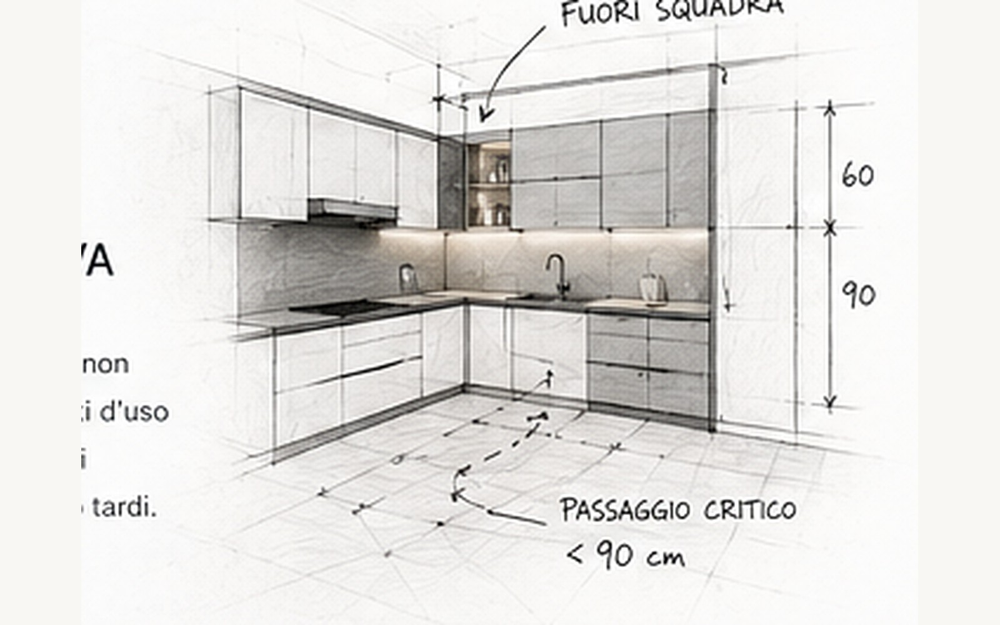

Lavastoviglie aperta, persona al lavello, passaggio dietro.
Sulla pianta il passaggio esiste. Nella scena reale diventa il punto dove tutto si blocca: anta aperta, corpo davanti al lavello e qualcuno che deve attraversare.
Apri il casoCasi reali
Molte scelte sembrano corrette su pianta, render o preventivo. Poi arrivano persone, sedie, ante aperte, spesa da appoggiare, tavolo da usare e passaggi da attraversare ogni giorno.
Invia il tuo progettoArchivio 90G
Qui non trovi soluzioni complete da copiare. Trovi il tipo di problema che spesso resta nascosto finché qualcuno non immagina davvero la casa in uso.
Sulla pianta il passaggio esiste. Nella scena reale diventa il punto dove tutto si blocca: anta aperta, corpo davanti al lavello e qualcuno che deve attraversare.
Apri il casoNel render sembra il centro elegante della stanza. Poi arrivano sgabelli, forno aperto, chi cucina e chi passa: lo spazio centrale cambia peso.
Apri il casoAprire tutto può dare luce e respiro. Ma quando entrano divano, tavolo, tv, cucina e percorsi quotidiani, la libertà iniziale può diventare confusione.
Apri il casoNon sempre il problema è tecnico. A volte la cucina funziona, ma la parte alta sembra spezzata, pesante o poco coerente quando la guardi entrando.
Pavimento, scala, cucina, top, legno e nero possono funzionare uno per uno. Il rischio nasce quando tutti chiedono attenzione nello stesso ambiente.
Una camera in più sembra sempre una conquista. Poi vanno guardati armadi, passaggi, luce, contenimento e quello che la zona giorno deve sacrificare.

Metodo nei casi
Un'anta che si apre dove passi. Un tavolo che ruba profondità. Una colonna troppo vicina al piano cottura. Una penisola che sembra leggera finché qualcuno si siede.
È lì che una scelta corretta sulla carta può diventare scomoda nella vita reale.
Il punto
Ogni casa ha vincoli diversi. Sistema90G usa i casi per far emergere domande concrete: cosa succede se apro? dove passo? cosa perdo? cosa diventa scomodo quando lo uso davvero?
Prima della firma
Invia planimetria, render, preventivo o foto della cucina. Controlliamo passaggi, aperture e uso reale prima che la scelta diventi definitiva.
Invia il progetto su WhatsApp